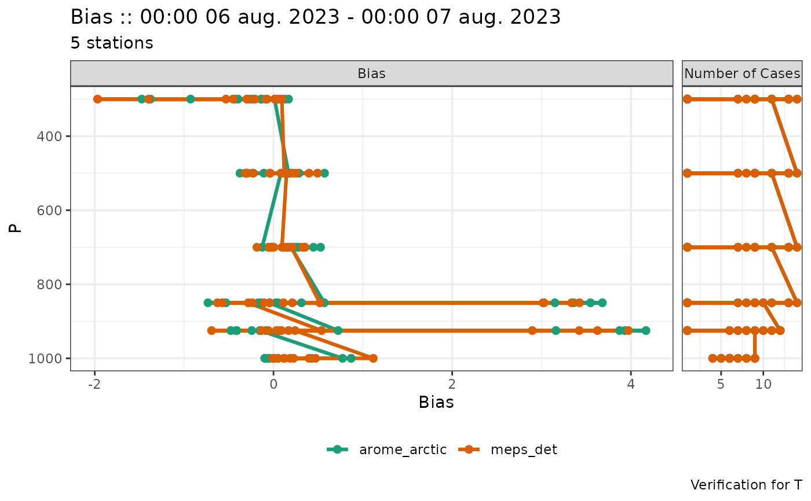
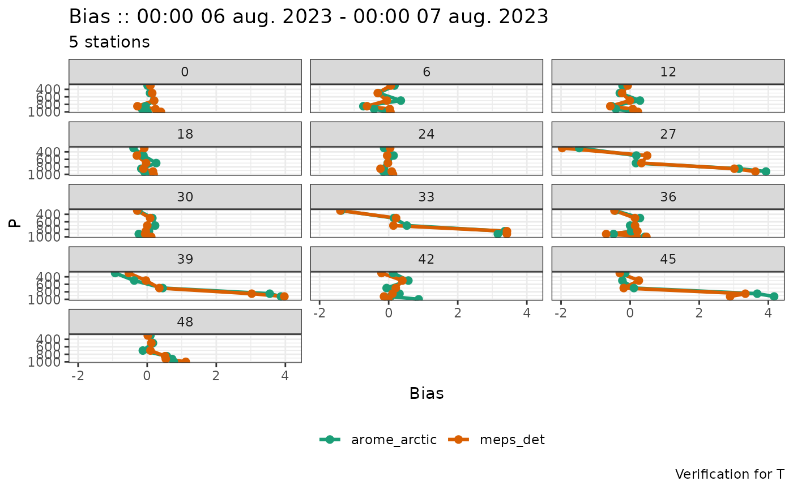
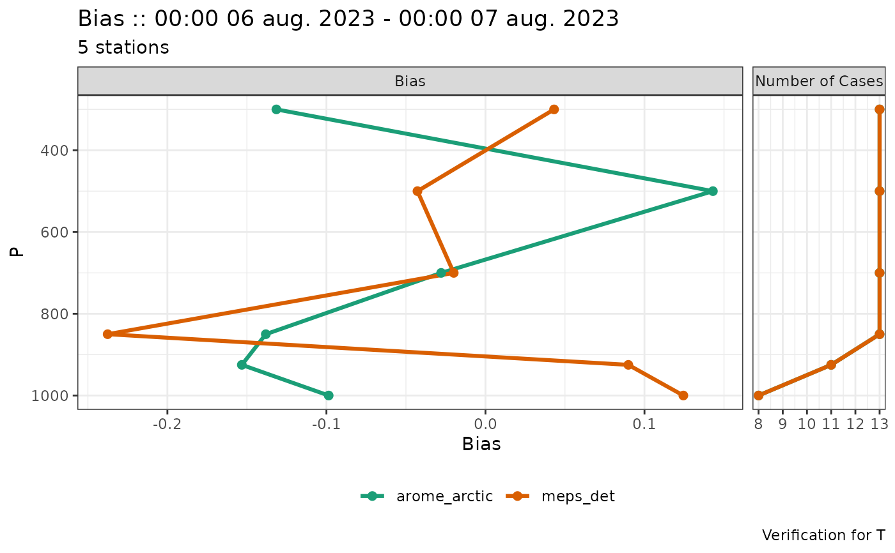

This is a wrapper for plot_point_verif that ensures the coordinate system is properly set up for plots of verification scores for vertical profiles.
Usage
plot_profile_verif(
verif_data,
score,
y_axis = "p",
lead_time = NA,
plot_num_cases = TRUE,
num_cases_position = c("right", "left"),
...
)Arguments
- verif_data
The verification data.
- score
The score to be plotted. Must be unquoted.
- y_axis
The y axis for the plot. Must be unquoted. Be default this is p, for pressure on the y axis, otherwise it should be set to the column name in
verif_datathat you wish to use for the y axis.- lead_time
The leadtime (or leadtimes) to plot. By default all lead times in the data are plotted. If more than one lead time is to be plotted, they must be separated by setting
colour_by = leadtimeand / orfacet_by = vars(leadtime). See plot_point_verif for details of these arguments.- plot_num_cases
Logical of whether to inlclude a panel for the number of cases. Note that the number of cases will not be plotted if
facet_byis set.- num_cases_position
The position of the number of cases panel relative to the score panel. For profile scores, this can only be "left", or "right".
- ...
Other arguments for plot_point_verif.
Value
A ggplot object of vertical profiles of verification scores.
Examples
# Not filtering or faceting results in overplotting
plot_profile_verif(verif_data_prf, bias)

# Facet by lead_time
plot_profile_verif(verif_data_prf, bias, facet_by = vars(lead_time))
#> Warning: plot_num_cases = TRUE cannot be used with facet_by. plot_num_cases set to FALSE.

# Remove rows with few cases using filter_by
plot_profile_verif(
verif_data_prf,
bias,
facet_by = vars(lead_time),
filter_by = vars(num_cases > 1)
)
#> Warning: plot_num_cases = TRUE cannot be used with facet_by. plot_num_cases set to FALSE.
# Filter to only a single panel
plot_profile_verif(verif_data_prf, bias, filter_by = vars(lead_time == 24))
